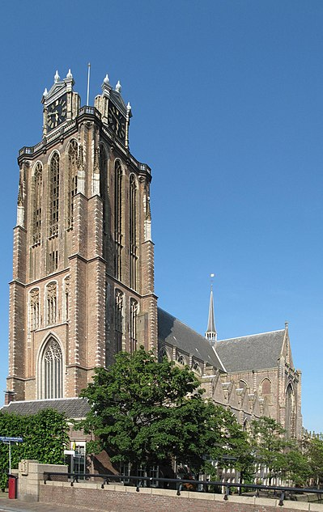
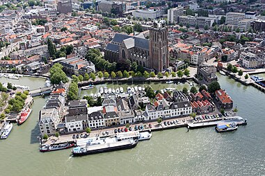

De Grote of Onze-Lieve-Vrouwekerk te Dordrecht, in de Nederlandse provincie Zuid-Holland, is de grootste kerk van deze stad. Het is een kruisbasiliek in Brabants-gotische stijl met een onvoltooide toren en de op een na oudste kerk van de stad (de oudste heet paradoxaal genoeg de Nieuwkerk). In 1572 kwam de kerk in handen van de protestanten. De kerk staat in de 'Top 100 van de Rijksdienst voor de Monumentenzorg' uit 1990.

Dordrecht is een van de oudste steden in Holland en kent een lange geschiedenis. Dordrecht werd voor het eerst vermeld in een tekst uit de twaalfde eeuw, toen de stad nog werd aangeduid als Thuredrech. Al in 1220 kreeg Dordrecht stadsrechten door graaf Willem I. In de middeleeuwen ontwikkelde de stad zich als belangrijke handelsstad en stapelplaats en was het een van de zes grote steden van Holland. Het kende een levendige handel in onder meer hout, graan en wijn. Later nam het belang van de stad af, maar de historische binnenstad herinnert nog altijd aan dit rijke verleden.